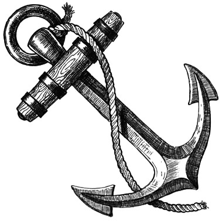

ANCRAGE
"L'homme est une victime du conditionnement des âmes, des sanctions et des permissions." Charlie CHAPLIN

L'ancrage fait référence aux processus d'association entre une réponse interne à un déclencheur externe ou interne, de façon à ce que la réponse puisse être rapidement et parfois discrètement retrouvée. C'est un processus qui, en apparence, est proche du conditionnement utilisé par PAVLOV. Selon le schéma béhavioriste du conditionnement par stimulus-réponse, le stimulus est toujours un événement de l'environnement et la réponse est toujours une action psycho-comportementale spécifique .
L'association est considérée comme réflexe et n'est pas l'objet d'un choix. Tout vécu d'une situation sensorielle et émotionelle comprend des éléments auditifs, kinesthésiques, visuels, gustatifs et olfactifs. L'ancrage correspond à la faculté d'un seul ou de plusieurs éléments de faire vivre à nouveau la situation en tout ou partie. On a tous eu l'expérience de sentir un parfum particulier à un moment donné et de se retrouver instantanément dans un autre lieu et un autre temps. Ici, le parfum sert de déclencheur du souvenir avec tout ce qu'il peut comprendre de comportements, d'émotions et d'association de pensées.
Le monde est plein de points d'ancrage, profonds ou superficiels. Ils donnent une permanence à notre expérience de vie. Et les ancres les plus puissantes sont parfois celles pour lesquelles le stimulus est en dehors de la conscience. Nous sommes capable de pouvoir transformer nos représentations internes et notre physiologie, parfois positivement et parfois non, en un instant et cela en fonction d'une lecture inconsciente de déclencheurs contextuels. L'ancre amène une réaction, donc une réponse inconsciente et conditionnée. Le pouvoir de ces ancres cachées vient du fait qu'elles courcircuitent les interférences et le filtrage de la conscience. Cela peut être utile si une personne se bat pour réaliser un changement alors que son esprit conscient le maintient dans son habitude. Cela donne aussi aux ancres cachées une puissante forme d'influence.
Nous créons constamment des points d'ancrage, il nous est en fait, impossible de faire autrement. Nous associons continuellement des pensées, des idées, des sentiments ou des états à des stimuli spécifiques. Dans le modèle béhavioriste du conditionnement, l'association est fortement établie au travers de la répétition d'action, de ressenti, de compréhension. La répétition peut être utilisée pour renforcer les ancres et on peut les utiliser pour ré-accéder à des états porteurs de ressources en nous comme chez les autres .
L'association est considérée comme réflexe et n'est pas l'objet d'un choix. Tout vécu d'une situation sensorielle et émotionelle comprend des éléments auditifs, kinesthésiques, visuels, gustatifs et olfactifs. L'ancrage correspond à la faculté d'un seul ou de plusieurs éléments de faire vivre à nouveau la situation en tout ou partie. On a tous eu l'expérience de sentir un parfum particulier à un moment donné et de se retrouver instantanément dans un autre lieu et un autre temps. Ici, le parfum sert de déclencheur du souvenir avec tout ce qu'il peut comprendre de comportements, d'émotions et d'association de pensées.
Le monde est plein de points d'ancrage, profonds ou superficiels. Ils donnent une permanence à notre expérience de vie. Et les ancres les plus puissantes sont parfois celles pour lesquelles le stimulus est en dehors de la conscience. Nous sommes capable de pouvoir transformer nos représentations internes et notre physiologie, parfois positivement et parfois non, en un instant et cela en fonction d'une lecture inconsciente de déclencheurs contextuels. L'ancre amène une réaction, donc une réponse inconsciente et conditionnée. Le pouvoir de ces ancres cachées vient du fait qu'elles courcircuitent les interférences et le filtrage de la conscience. Cela peut être utile si une personne se bat pour réaliser un changement alors que son esprit conscient le maintient dans son habitude. Cela donne aussi aux ancres cachées une puissante forme d'influence.
Nous créons constamment des points d'ancrage, il nous est en fait, impossible de faire autrement. Nous associons continuellement des pensées, des idées, des sentiments ou des états à des stimuli spécifiques. Dans le modèle béhavioriste du conditionnement, l'association est fortement établie au travers de la répétition d'action, de ressenti, de compréhension. La répétition peut être utilisée pour renforcer les ancres et on peut les utiliser pour ré-accéder à des états porteurs de ressources en nous comme chez les autres .
Cependant, les points d'ancrage ne suscitent pas tous des associations positives. Certains nous mettent mal à l'aise, ou pire. Le pouvoir d'un point d'ancrage dépend, entre autre chose, de l'intensité de l'état (émotionel) originel auquel il est lié. Nous vivons quelquefois des expériences si désagréables avec ceux qui nous entourent que, dès que nous les voyons, nous nous sentons être dans un état émotionnel tendu. Par exemple, dans les conjugopathies qui sont des problèmes de couple récurrents, c'est relativement classique de retrouver ce type d'ancrage. Ce sont ces ancrages invisibles qui structurent le conflit et le maintient dans une rigidité d'incompréhension. Le couple se conditionne à la non résolution car sous l'influence de déclencheurs (pensées, lieux, contextes, comportements, etc.) qu'il ne mesure pas consciemment. Cela peut même engendrer la séparation et l'annihilation de la relation.
L'utilisation de la métaphore de l'ancre est lourde de sens. Les membres de l'équipage attachent l'ancre d'un bateau à un point stable afin de le maintenir dans un certain périmètre et l'empêcher de dériver. Ce qui implique que l'élément qui sert d'ancre psychologique n'est pas seulement un stimulus mécanique qui cause une réponse, mais aussi un point de référence pour aider à stabiliser un état particulier. Pour poursuivre l'analogie, le bateau peut être considéré comme le point spécifique de focalisation de notre conscience sur l'océan de l'expérience. Les ancres servent de point de référence pour nous aider à trouver un lieu spécifique sur cet océan d'expériences, à maintenir notre attention, et à l'empêcher de dériver. Il faut juste amarrer au bon endroit !
Néanmoins, si les ancres sont un outil de réponse à l'environnement et à la relation, elles peuvent être freinantes voire bloquantes. Alors parfois, il est nécessaire de lever l'ancre pour repartir.
L'utilisation de la métaphore de l'ancre est lourde de sens. Les membres de l'équipage attachent l'ancre d'un bateau à un point stable afin de le maintenir dans un certain périmètre et l'empêcher de dériver. Ce qui implique que l'élément qui sert d'ancre psychologique n'est pas seulement un stimulus mécanique qui cause une réponse, mais aussi un point de référence pour aider à stabiliser un état particulier. Pour poursuivre l'analogie, le bateau peut être considéré comme le point spécifique de focalisation de notre conscience sur l'océan de l'expérience. Les ancres servent de point de référence pour nous aider à trouver un lieu spécifique sur cet océan d'expériences, à maintenir notre attention, et à l'empêcher de dériver. Il faut juste amarrer au bon endroit !
Néanmoins, si les ancres sont un outil de réponse à l'environnement et à la relation, elles peuvent être freinantes voire bloquantes. Alors parfois, il est nécessaire de lever l'ancre pour repartir.
EN RELATION


CROYANCE
SOMMEIL
TRANSE MUER
SYSTEME
REPETITION
COMPORTEMENT